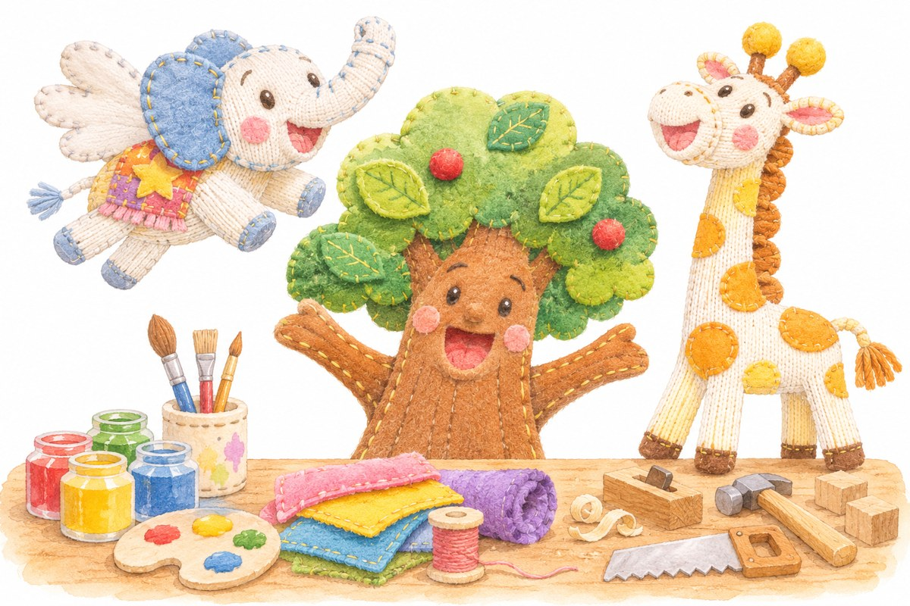

第1章 芸術
十の芸術が、
空飛ぶゾウや話す木など、自由な人形たちと創作の道具
十の芸術が、
小さな舞台に集まる
人形劇は、物語、絵、音楽、工作、演技がひとつになった「総合芸術」です。しかも、登場人物そのものを自分で作れます。10分の小さな作品にも、たくさんの創作が詰まっています。


案内役から、ひとこと「私、絵は苦手だし…」という方も大丈夫。十もある芸術のうち、どれか一つがあなたの出番です。
ひとつの舞台に、いろんな芸術が
たとえば「森で迷子になったウサギ」という10分の作品でも、物語、人形、背景、衣装、音楽、声、動きと、七つ以上の創作が必要です。それぞれが独立した芸術なのに、舞台の上でひとつに溶け合います。
| 芸術の分野 | 人形劇での出番 | アマチュアの例 |
|---|---|---|
| 文学 | 物語・脚本・台詞 | 昔話の脚色、地域の伝説を脚本に |
| 絵画 | 人形や背景のデザイン | 模造紙や段ボールに描く森や海 |
| 造形 | 人形の顔や体 | 発泡スチロールや紙粘土の頭 |
| 工芸 | 木工・裁縫・仕掛け | 口が開く仕掛け、糸操りの手板 |
| ファッション | 人形の衣装 | 古着や端切れで作る衣装 |
| 演劇 | 演技・演出 | 声と動きの分担、間の取り方 |
| 音楽 | 主題歌・劇中音楽 | リコーダーや鍵盤ハーモニカの生演奏 |
| 音響 | 効果音 | 小豆をざらざらさせて波の音に |
| 舞踊 | 人形の動き | 歩き方だけで性格を表す練習 |
| 舞台美術 | 舞台装置・小道具 | 折り畳める移動式の舞台 |
| 照明 | 時間や季節、気持ちの表現 | クリップライトと色セロハン |
役者そのものを、ゼロから作れる
ふつうの演劇では、人間が登場人物を演じます。人形劇では、登場人物そのものを作れます。
- 空を飛ぶゾウ、話をする大きな木、泣き虫の怪獣
- 首がどこまでも伸びるキリン
- 人間と会話する太陽や月
- やかんや傘、手袋が主役になる「オブジェクト・シアター」（身近な物を登場人物にする手法）
百科事典ブリタニカは、人形を「機械ではなく、人間の手によって動かされる姿」と説明しています。動かない物体に人が命を吹き込み、観客が「生きている」と感じる瞬間。そこに人形劇の核心があります。
歴史の中でも、芸術家が集まる場だった
人形浄瑠璃文楽：語り・三味線・人形の三つが一体になる芸能です。主な人形は、三人の人形遣いが一体を操ります。ユネスコの無形文化遺産にも登録されています。
大正期の「人形座」：1920年代の東京で、舞台装置家の伊藤熹朔や弟の千田是也らを中心に、美術家・演劇人・音楽家が集まった人形劇グループです。日本の現代人形劇は、異分野の芸術家が集まる場として始まりました。
アマチュア人形劇は、その「いろんな人が集まる場」を、ふつうの市民の規模で受け継いでいるとも言えます。
「でも、そんなに多才じゃないし…」という方こそ、次のページへ。得意なことひとつで、参加できます。
誰でものページへ →